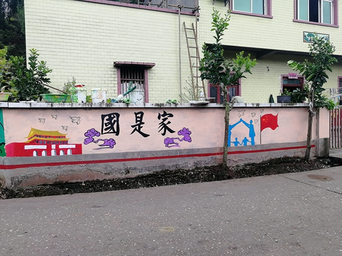
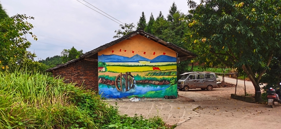

【供稿/重庆数字创意职教集团】近期，重庆数字创意职教集团在助力打赢脱贫攻坚战中，着眼于筑牢贫困村的文化阵地，把潼南区双江镇丁沟村（贫困村）文化基础设施建设作为重点，规划建设美丽乡村，以“脱贫奋斗奔小康”为主题，设计并制作了系列文化主题墙绘，帮助贫困村发掘和传承优秀传统文化，提升贫困地区的“文化造血”能力，不断增强脱贫攻坚实效。
此系列文化主题墙绘共包括8张分图，组图设计创意来源于丁沟村脱贫攻坚的奋斗实践。丁沟村脱贫攻坚奋斗实践，包括发展花椒产业、农业发展、基础设施建设、乡村人居环境整治、勤劳致富、幸福生活、奋斗小康，反映了丁沟村凝心聚力、脱贫奋斗奔小康的故事。
重庆数字创意职教集团在脱贫攻坚奋斗实践中，文化扶贫注重搭建和完善多元文化活动载体和平台，结合贫困村实际，该项目有针对性地将优秀传统文化融入村民生产生活中，以国是家、善作魂、勤为本、俭养德、诚立身、孝当先、和为贵等优秀传统文化为主题，融入丁沟村脱贫致富发展花椒、小龙虾、油菜籽、鱼塘、稻米、土特产品等奋斗实践元素，以农业、农民群众为主体，促进提升乡村群众文化素养，不断提高村民文化生活的质量。
提升“文化造血”能力同时，村民获得刚、幸福感不断提升。丁沟村村民李秀华说：这些墙绘美化了我们的乡村，让我们的居住环境有了很大的改善，住起来更加舒心，墙绘上的画面也正展现了我们现在的幸福生活，谢谢张基斌书记给我们带来的大变化。丁沟村村民全红英说：是的，这么好的生活环境是其他村见不到的，他们经过我们村都羡慕我们村有这么大的变化，羡慕我们有这么安逸的生活环境，小康生活真美好！驻村“第一书记”张基斌谈到：在我们贫困村改善人居环境整治的过程中，非常感谢重庆九龙创意职教集团给我们带来的文化扶贫项目，项目的实施不仅改善提升了村民生活环境、村容村貌，而且提升了群众的身心素养，提高了群众精气神，涵养一方文化，让我们以更加自信的姿态迈向乡村振兴。

